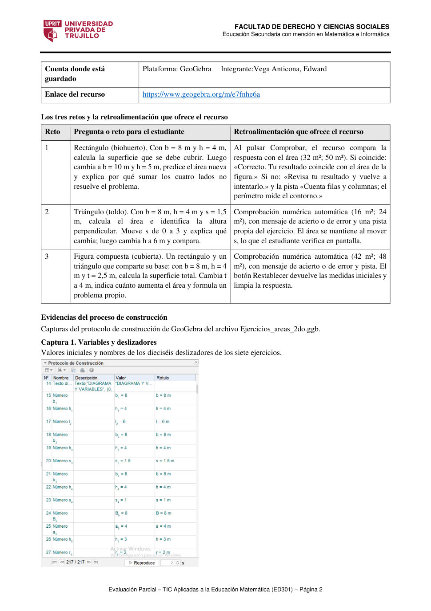
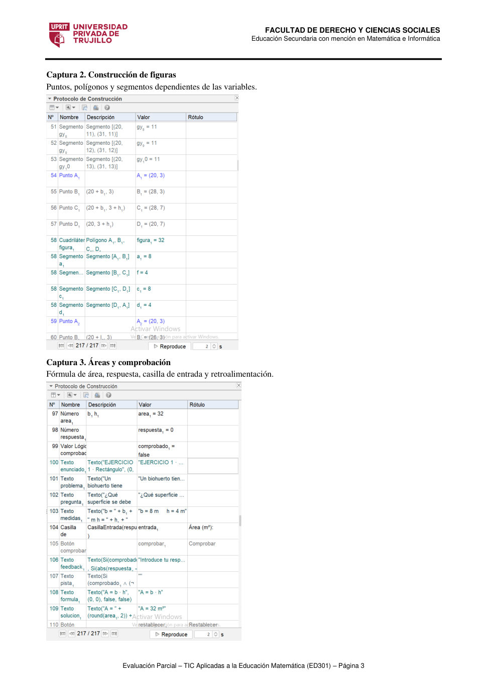

Abrir los ejercicios interactivos de áreas
Ficha técnica
El recurso aborda el rectángulo, cuadrado, triángulo, paralelogramo, trapecio, círculo y figura compuesta. Se vincula con la competencia del Currículo Nacional «Resuelve problemas de forma, movimiento y localización». Incluye medidas modificables, un campo de respuesta, botón «Comprobar», pistas, opción para mostrar la solución y controles de navegación.
Tres retos documentados
8 × 4 m = 32 m²; cambiar a 10 × 5 m = 50 m². Diferenciar superficie de perímetro.
Base 8 m y altura 4 m: 16 m². Variar el desplazamiento y luego cambiar la altura a 6 m: 24 m².
Rectángulo y triángulo: 42 m² en la configuración inicial; después 48 m² al cambiar la altura del triángulo.
Diseño de la sesión de aprendizaje
La ficha incluye una sesión de 90 minutos, fechada el 30/10/2026, para 2.º A y B de CEMA Tambulla: inicio (15 minutos), desarrollo (55 minutos) y cierre (20 minutos), con exploración de GeoGebra, ejemplos guiados y metacognición.
Competencia transversal
Se consigna «Se desenvuelve en entornos virtuales generados por las TIC», al explorar figuras mediante GeoGebra, y «Gestiona su aprendizaje de manera autónoma», al revisar y corregir procedimientos.

